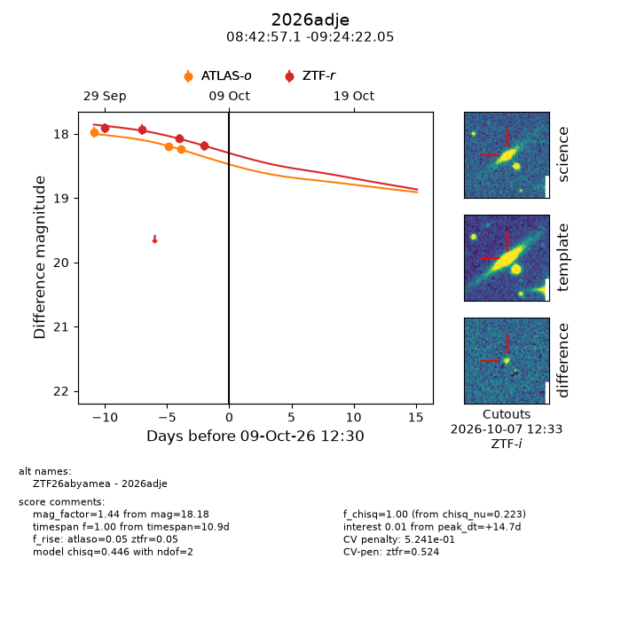
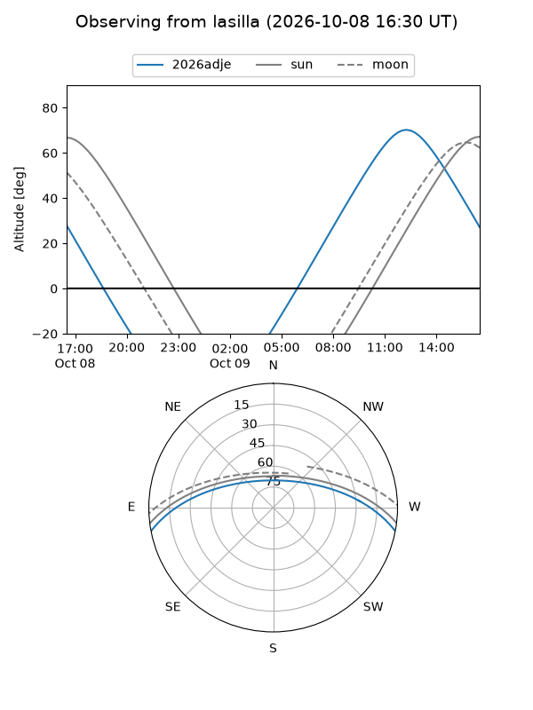
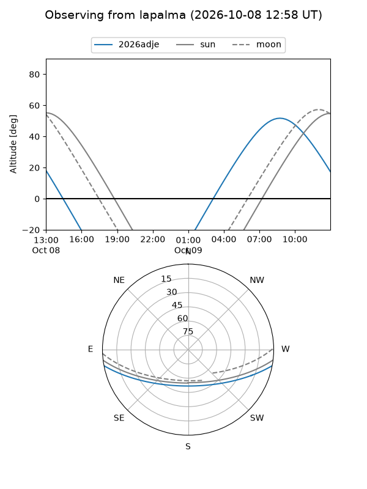
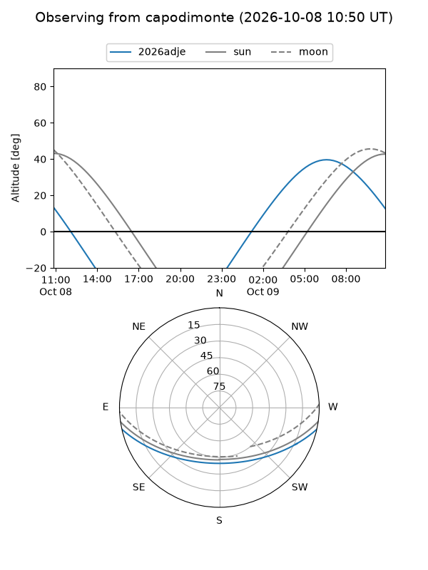
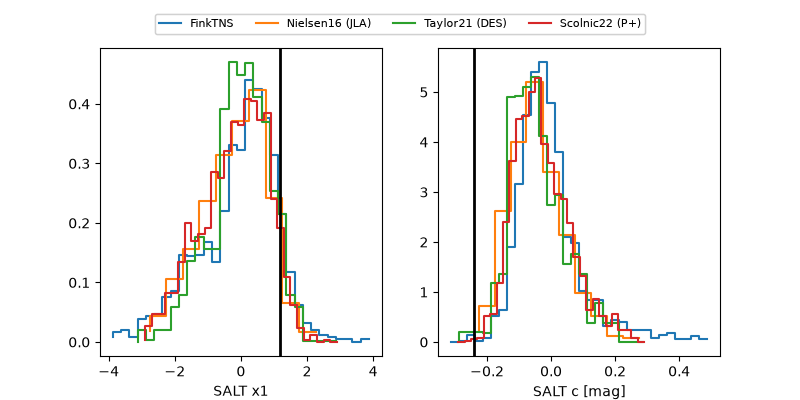

2026adje
Target 2026adje at 2026-10-09 12:32
Aliases and brokers:
FINK-ZTF: ztf.fink-portal.org/ZTF26abyamea
Lasair-ZTF: lasair-ztf.lsst.ac.uk/objects/ZTF26abyamea
ALeRCE-ZTF: alerce.online/object/ZTF26abyamea
YSE-PZ: ziggy.ucolick.org/yse/transient_detail/2026adje
TNS name: wis-tns.org/object/2026adje
Direct TNS query: direct search
alt names
ZTF26abyamea (ztf,fink_ztf)
2026adje (tns,yse)
Coordinates:
equatorial (ra, dec) = 130.7377,-9.40612
equatorial (HMS+DMS) = 08:42:57.06,-09:24:22.05
galactic (l, b) = (235.1274,+19.63555)
Flags:
peak dt: +14.7
likely cv: !!
Photometry:
last atlaso=18.24, ztfr=18.18
3 atlaso, 4 ztfr detections
Lightcurve

Visibility



Additional plots
